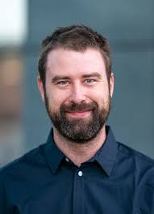

Silvio C. E. Tosatto | Università degli Studi di Padova, Italy

Full Professor in Bioinformatics and Principal Investigator at the BioComputing UP lab of the Dept. of Biomedical Sciences, Università degli Studi di Padova (2007 - present). Associate member of the CNR Institute of Neuroscience, Padua section (since 2015). PhD (Dr. rer. nat., Grade: Magna cum laude, 2002) in bioinformatics (computer science) and Graduate in Computer Science & Business Administration (Diplom Wirtschaftsinformatiker, 1998) from the Universität Mannheim (Germany). ELIXIR Deputy Head of Node for Italy, Co-Lead of the ELIXIR Cellular and Molecular Research theme. His scientific work centers on the fields of bioinformatics and computational biology, with a special emphasis on the structural and mechanistic aspects of complex systems. His lab has been developing both tools and databases for proteins at different levels, contributing to various international consortia.
Salvador Ventura | Universitat Autònoma de Barcelona, Spain

A graduate in Biology from the University of Barcelona (UB), with a Master's degree in Biochemistry and Molecular Biology and a PhD in Biology from the Autonomous University of Barcelona (UAB), Salvador Ventura has been a Professor of Biochemistry and Molecular Biology at the UAB since 2011. He is also an ICREA Academia researcher at the UAB and served as Director of the Institute of Biotechnology and Biomedicine (IBB) from 2017 to 2020. Previously, he worked as a postdoctoral researcher (1999-2002) at EMBL-Heidelberg and has been a researcher at Harvard Medical School (USA) and the Karolinska Institute (Sweden), among other institutions. He rejoined the UAB as a Ramón y Cajal researcher in 2003. His research has focused on investigating the link between protein structure and degenerative diseases in order to develop new molecules for their treatment. The research of Salvador Ventura, author of more than 310 research articles, in addition to several books and 19 patents, has been directed and developed mainly in the area of conformational diseases caused by protein misfolding.
Juan Cortes | CNRS, France

Computer scientist specialized in algorithmic robotics and is a Research Director at CNRS. He is one of the pioneers in the development of structural bioinformatics approaches based on algorithms originating from robotics and artificial intelligence. During the last 15 years, he has conducted fruitful interdisciplinary research in this area in collaboration with bio-chemists, biologists and physicists. He has co-authored over 90 scientific papers and coordinated the development of several software packages and tools.
Miguel A. Andrade-Navarro | Johannes Gutenberg University Mainz, Germany

He received his Ph.D. in Biochemistry at the Universidad Complutense de Madrid in 1994. He trained at the post-doctoral level at the European Molecular Biology Laboratory in Heidelberg and Cambridge with Chris Sander and Peer Bork. His post-doctoral studies involved the development and application of computational methods for the analysis of gene and protein function and structure. From 2003 to 2007, he was Assistant Professor in the Department of Medicine of the University of Ottawa and Scientist and Head of the Bioinformatics Group of the Ottawa Health Research Institute in Ottawa, Canada, where he was promoted to Senior Scientist in 2006. In 2007, he started the Computational Biology and Data Mining group, first at the Max Delbrück Center for Molecular Medicine in Berlin and since September 2014 at the Faculty of Biology of the Johannes Gutenberg University in Mainz, where he is a professor of bioinformatics.
Henning Hermjakob | EMBL-EBI, United Kingdom

He obtained his MSc in Bioinformatics from the University of Bielefeld, Germany, in 1996. He joined the European Bioinformatics Institute (EMBL-EBI) in 1997. He leads the Molecular Systems Cluster at the EBI, and 2015-2019 had joint appointment as Director of Bioinformatics at the National Center for Protein Sciences, Beijing. His team provides a broad portfolio of resources for systems biology, ranging from molecular interactions (IntAct) and curated pathways (Reactome) to systems biology models (BioModels) at the highest level of abstraction. As founding member and SC member of the HUPO Proteomics Standards Initiative, and SAB member in systems and translational molecular biology projects, he contributes to the international standardization of data representation in molecular biology, and the implementation of community standards in high availability, stable public resources. Henning Hermjakob leads the Molecular Systems services at EMBL-EBI, which provide worldwide reference data resources in interactomics (IntAct), pathways (Reactome), and systems biology models (BioModels).
Cristina Marino-Buslje | Fundación Instituto Leloir / CONICET / ITBA, Argentina

Principal Investigator at CONICET, Head of the Structural Bioinformatics Unit at the Leloir Institute Foundation, and Full Professor at ITBA. She holds a Bachelor's degree in Biology and a Master's degree in Biotechnology from the Institute of Biotechnology and Biomedicine, both at the Autonomous University of Barcelona. She earned her PhD in Biological Sciences from the Autonomous University of Barcelona and completed a Postdoctoral Fellowship at the University of Cambridge. From 1999 to 2000, she was a Visiting Professor in the Biochemistry, Biophysics, and Bioinformatics Group at the Tata Institute of Fundamental Research (TIFR) in Bangalore, India. Her research interests include protein function, structure, and evolution; protein-protein interactions; intrinsically disordered proteins and liquid-liquid phase separation; non-membrane organelles; protein aggregation in neurodegenerative diseases and cancer; mutational patterns; and software and database development. Dr. Marino-Buslje has a strong track record in developing bioinformatics tools for analyzing biological data. Recently, her research has integrated machine learning methodologies, including the application of Convolutional Neural Networks (CNNs) neurodegenerative diseases analysis and the use of embeddings for studying RNA-binding proteins and aggregation-prone regions in amyloid-forming proteins among other research.
Silvina Fornasari | UNQ / UNLP / CONICET, Argentina

She is a Biochemist and holds a PhD from the Faculty of Exact Sciences at the National University of La Plata, Department of Biological Sciences. She is currently an Associate Professor at the National University of Quilmes and an Adjunct Professor at the National University of La Plata. She teaches Chemistry I (UNQ) and Biochemistry I and III (UNLP). She is an Adjunct Researcher at CONICET (National Scientific and Technical Research Council). She is co-author of more than twenty publications in peer-reviewed international journals on Molecular Evolution, Bioinformatics, and Structural Biochemistry of Proteins. She is also co-author of a peer-reviewed article related to teaching. She has participated in various outreach projects related to teaching.
Ana Teresa de Vasconcelos | National Laboratory of Scientific Computing, Brazil

PhD in Biological Sciences (Genetics) at the Federal University of Rio de Janeiro (2000). She is currently a researcher at the National Laboratory of Scientific Computing, an accredited professor in the Department of Genetics at the Federal University of Rio de Janeiro. She participated in the creation and was the first president of the Brazilian Association of Bioinformatics and Computational Biology (AB3C). She is coordinator of the Computational Genomics Unit Darcy Fontoura de Almeida. She is also coordinator of the Associated International Laboratory (CNRS) in the area of Bioinformatics. She has experience in Bioinformatics and Computational Biology acting on the following subjects: Genomics, metagenomics, exome, transcriptome, microRNA. Development of mathematical methods and computational tools applied to genomics in different animal models.
Ariela Vergara | Universidad de Talca, Chile

She holds a degree in Bioinformatics Engineering from the University of Talca and a PhD in Applied Sciences from the same institution. She has completed postdoctoral research at the National Institutes of Health and Kansas State University, both in the United States. The use of computational methods to answer biological questions has become a fundamental strategy in the discovery and development of new drugs. Various software programs exist for studying the structure and function of proteins involved in cancer, genetic diseases, infectious diseases, and others. Ariela is an academic and researcher at the Center for Bioinformatics, Simulation, and Modeling at the University of Talca and currently serves as Vice-Rector of Innovation. From 2021 to 2022, she was the Director of the School of Civil Engineering in Bioinformatics. Since 2017, she has been an adjunct researcher at the Millennium Nucleus for Diseases Associated with Ion Channels (MiNICAD). Currently, her research focuses on computational studies of membrane proteins that function as channels and transporters, using methods from structural bioinformatics, molecular modeling, docking simulations, molecular dynamics, and energy calculations. Ariela Vergara currently works at the Center for Bioinformatics Simulation and Modeling (CBSM), Universidad de Talca. Her research area is focused in computational structural biology of membrane proteins. She is particularly interested in revealing the structural basis of protein−protein interactions regulating the function of ion channels and membrane transporters. L’OREAL-UNESCO AWARD FOR WOMEN IN SCIENCES Chile 2025.
Victoria Peterson | IMAL-UNL-CONICET, Argentina

Victoria Peterson is a CONICET Assistant Researcher at the Institute of Applied Mathematics of the Litoral (IMAL), UNL-CONICET, and an Associate Professor at the Faculty of Chemical Engineering of the National University of the Litoral (UNL). She holds a degree in Bioengineering (2013) from UNER, Argentina, and a PhD in Engineering (2018) from UNL, Argentina. She was a CONICET postdoctoral fellow at IMAL and later a postdoctoral research fellow at Harvard Medical School at Massachusetts General Hospital, Boston, USA. She completed doctoral research stays at ETH Zurich, Switzerland, in 2017 and 2018. Currently, she leads an Applied Computational Neuroengineering group (NiCALab), whose main objective is the development of artificial intelligence (AI) solutions to improve neurotechnologies. Her research interests also include the responsible use of data in matters of gender and algorithmic justice, as well as neuroethics.
Andrea Guzman | ELIXIR
Current International Relations Officer at the ELIXIR Centre, where she manages international collaborations and projects. She serves as the ELIXIR Centre's point of contact for global collaborations and partner organizations. She has actively participated in symposia and conferences, strengthening research and data infrastructure ties in the life sciences between Europe and other regions, such as Latin America.
Gábor Erdös | ELTE, Hungary

Assistant Professor and Principal Investigator at the Department of Biochemistry at Eötvös Loránd University (ELTE), Hungary, where he leads the Protein Dynamics Research Group. Trained as a bioengineer, he holds a PhD in structural biochemistry and has a decade of experience in bioinformatics. His career spans ten years of academic research alongside specialized experience in the pharmaceutical industry, with professional activity in Argentina and extensive collaborations across Europe, particularly in Italy and Israel. His research expertise centers on the characterization of intrinsically disordered proteins through the integration of biophysical concepts and advanced computational approaches. His work focuses on developing novel predictive methods for both general and functional protein disorder, with the goal of bridging artificial intelligence and biophysics. To this end, he employs a broad range of methodologies that includes machine learning, molecular dynamics simulations, and statistical mechanics to investigate the complex behavior and functional roles of intrinsically disordered proteins. He serves as Co-lead of the ELIXIR IDP Community and as the Hungarian Representative for COST. He is also a core member of the ML4NGP COST action, IDP2Biomed twinning project and a contributor of the IDPFun2 project.
Salvador Capella Gutierrez | BSC-CNS, Spain
Leader of the Spanish National Bioinformatics (INB) Coordination Node at the Barcelona Supercomputing Center (BSC). His current focus is on the development of long-term infrastructures to facilitate the scientific benchmarking and technical monitoring of bioinformatics tools, web services and workflows in the context of ELIXIR, a pan-European distributed organization across 21 countries and more than 180 institutions. His team is also responsible for the technical coordination of ELIXIR in Spain, which implies their involvement in several bioinformatics projects. These include contributions to the RD-Connect and the BluePrint data portal development from a technical and scientific perspective. He received his PhD in Bioinformatics in 2012, awarded by the Center for Genomic Regulation (CRG) together with the Pompeu Fabra University (Barcelona, Spain). His work focused on applying evolutionary methods to different omics data to answer long-standing biological questions. From the beginning of his scientific career, Dr. Capella-Gutierrez has participated in different international consortia, which is reflected as part of his scientific publications covering an ample number of topics.